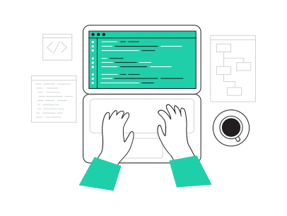
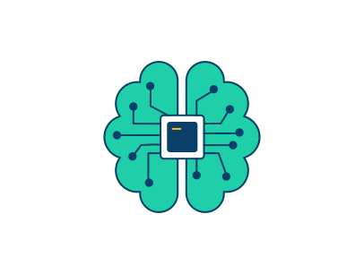
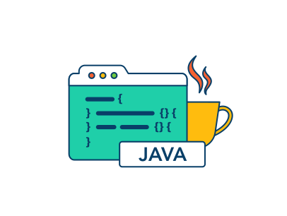
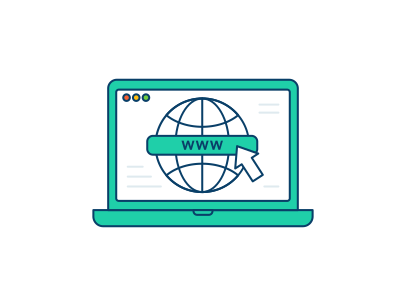
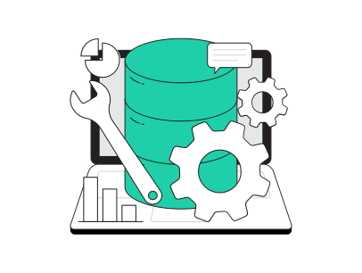
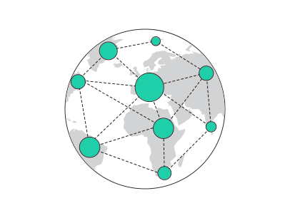

Leonardo Brandão do Amarante
Junior Developer
Sobre mim
Sou um estudante de escola técnica. Além disso, sou um programador júnior altamente dedicado ao mundo da tecnologia. Desde cedo, fui atraído pelo fascinante universo da programação, e essa dedicação me levou a explorar diversos campos dentro desse vasto campo de conhecimento. O que mais me encanta no desenvolvimento de software é a capacidade de criar soluções inovadoras para os desafios do dia a dia. Tenho um compromisso sério e profissional em buscar constantemente melhorias e aprimoramentos. Como programador júnior, meu objetivo é desenvolver aplicativos e sistemas que promovam uma melhor qualidade de vida para as pessoas. Estou sempre em busca de novos desafios e oportunidades para aplicar minhas habilidades de programação. Acredito que a constante aprendizagem e o enfrentamento de desafios são fundamentais para o crescimento pessoal e profissional.
Formações
Conheça minhas especialidades
- 
Tecnico em informática
Tive a oportunidade de cursar o Técnico em Informática na prestigiada Fundação Matias Machline, um curso com duração de 3 anos que proporcionou uma formação abrangente na área de tecnologia da informação. Ao longo desse período, adquiri conhecimentos essenciais em diversas áreas relacionadas à informática. Iniciei minha trajetória com um enfoque específico em lógica de programação, o que me permitiu desenvolver uma base sólida para criar algoritmos e resolver problemas computacionais de forma eficiente.
- 
Lógica de Programação
A oportunidade de participar do curso de lógica de programação na FMM foi altamente benéfica para adquirir conhecimentos fundamentais nessa área. Durante o programa, foram abordados uma ampla variedade de tópicos e conceitos essenciais para o desenvolvimento de habilidades sólidas em lógica de programação. O curso proporcionou uma base sólida, permitindo-me pensar de forma estruturada e lógica. Através de exercícios práticos e desafios, pude aprimorar minha capacidade de resolver problemas de maneira eficiente e eficaz, aplicando os princípios da lógica de programação.
- 
Programação Orientada a Objeto
Participar do curso de Programação Orientada a Objetos (POO) na FMM representou uma oportunidade valiosa para adquirir conhecimentos avançados nessa área. Durante o programa, foram abordados uma ampla gama de tópicos e conceitos relevantes para o desenvolvimento de habilidades em POO. Um dos enfoques principais do curso foi a introdução aos princípios e conceitos essenciais da POO, como encapsulamento, herança e polimorfismo. Esses conceitos desempenham um papel fundamental na compreensão da estrutura e funcionamento da POO, permitindo a criação de sistemas mais flexíveis, modulares e reutilizáveis.
- 
Desenvolvimento Web
Participar do curso de Desenvolvimento Web oferecido pela instituição FMM proporcionou uma valiosa oportunidade para adquirir conhecimentos avançados em uma área em constante evolução. Ao longo do programa, foram abordados diversos tópicos e conceitos relevantes para o desenvolvimento de habilidades em criação de sites e aplicações web. O curso abrangeu uma ampla gama de temas, incluindo as linguagens de marcação HTML (Hypertext Markup Language) e CSS (Cascading Style Sheets). Essas linguagens são fundamentais para a construção de estruturas e estilos de páginas web, possibilitando a criação de interfaces visualmente atrativas e bem estruturadas. Além disso, o curso também se aprofundou no desenvolvimento de aplicações web dinâmicas, utilizando a linguagem JavaScript. Através desse tópico, pude aprender a implementar recursos interativos e funcionais em websites, permitindo a interação dos usuários e a criação de experiências mais envolventes.
- 
Banco de Dados
Participar do curso de Banco de Dados oferecido pela FMM proporcionou uma excelente oportunidade para adquirir conhecimentos sólidos nessa área fundamental da ciência da computação. No curso, um dos principais focos foi a introdução aos fundamentos de banco de dados. Através dessa abordagem, os participantes puderam aprender sobre os diferentes tipos de bancos de dados, incluindo os relacionais e os não relacionais, compreendendo as vantagens e desvantagens de cada abordagem. Além disso, foram apresentados os conceitos de tabelas, registros e relacionamentos, que são fundamentais para a modelagem de dados. Um outro tópico de grande relevância no curso foi a linguagem SQL (Structured Query Language), utilizada para interagir com bancos de dados relacionais. Os participantes tiveram a oportunidade de aprender a criar, modificar e consultar dados utilizando comandos SQL, possibilitando a manipulação eficiente dos registros armazenados no banco de dados.
- 
Rede de Computadores
A oportunidade de participar do curso de Redes de Computadores oferecido pela FMM foi extremamente valiosa para adquirir conhecimentos abrangentes nessa área essencial da tecnologia da informação. Um dos principais enfoques do curso foi a introdução aos fundamentos das redes de computadores. Durante o programa, tive a oportunidade de aprender sobre os diferentes tipos de redes, como as LANs (Local Area Networks) e as WANs (Wide Area Networks), além de compreender os protocolos de comunicação fundamentais, como o TCP/IP, que são essenciais para o funcionamento das redes. Além disso, o curso explorou a arquitetura das redes de computadores, incluindo os componentes físicos, como cabos, switches, roteadores e dispositivos de rede. Foi abordada a interconexão desses dispositivos e a configuração de redes locais e de longa distância.